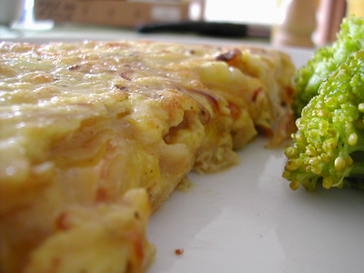

Frittata with Onion
Home

Description
This is Frittata with Onion from Hazan's Essentials of Classic Italian Cooking. It's a great foundation for experimenting with frittatas.
Ingredients
- 4 cups onion sliced very thin
- 3 tablespoons extra virgin olive oil
- Salt
- 5 eggs
- 2/3 cup fresh grated parmigiano-reggiano cheese
- 2 tablespoons butter
- Black pepper
Steps
- Put onions, olive oil, and some salt into a sauté pan. Turn the heat on low and cover. Cook until the onions are greatly diminished, then uncover and cook until they are golden brown. When done, remove the onions with a slotted spoon.
- Beat eggs in a bowl and add browned onions, cheese, salt, and a bit of pepper. Mix thoroughly.
- Melt butter in a cast-iron pan on medium and get the bottom oiled. When the butter begins to foam, add egg mixture.
- Turn heat to very low, and turn on the broiler. When the eggs have set and thickened and only the surface is runny, put the pan under the broiler until the top sets, before it becomes browned.